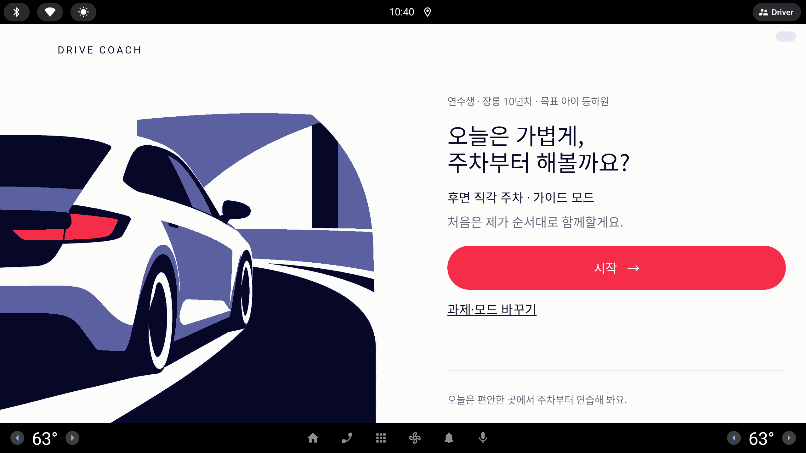
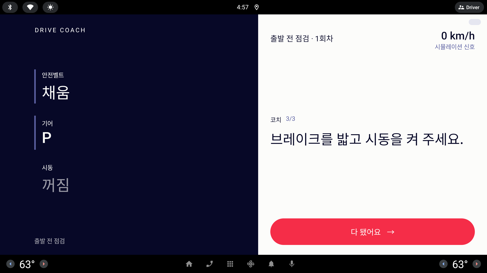

밤 운전용 어두운 색 다섯 가지. 모두 앱의 정체성인 Ink(먹 남색) · Periwinkle(보라빛 파랑) · Signal(빨강) 계열 안에서 만들었고, 이 페이지만 새 색을 허용했다. 안마다 홈과 출발 전 점검을 그 팔레트로 그렸고, 맨 아래에 라이트 ↔ 다크 토큰 대응표와 대비 · 눈부심 수치를 모았다.
사용자 피드백 (원문, 10/7) — #고민
- 다크모드 고려 색상 고민
아래 화면은 모두 실제의 1/3 (853 × 423) — 실제 화면은 약 3배
야간 눈부심 기준 (모든 안에 적용해 검사)넓은 면(바탕 · 패널 · 일러스트 바탕면)은 상대휘도 0.05 이하. 일러스트의 밝은 면(차체)은 0.25 이하. 그보다 밝은 것은 글자와 주 알약뿐이고 합쳐 화면의 약 10% 이하. 글자는 순백(1.0) 대신 휘도 0.7~0.9 의 옅은 색. 지금 라이트 홈은 바탕 휘도 0.97 이 화면의 절반 이상이다.
지금 색 구조 (코드)CoachColors 여섯 토큰을 29개 파일에서 약 400번 직접 쓴다(Paper 125 · Periwinkle 84 · Ink 65 · Muted 56 · Lavender 41 · Signal 29). Paper 가 "바탕" 과 "Ink 패널 위 글자" 두 역할, Ink 도 "글자" 와 "패널" 두 역할이라 값만 바꾸면 패널이 하얘진다 → 역할 이름(바탕 · 패널 · 글자 · 패널 글자 …)으로 나누는 일이 먼저다. 홈 · 브리핑 일러스트는 비트맵(poster_car.webp · poster_wheel_b.webp)이라 야간판을 따로 그려야 한다.
전환 · 지켜야 할 것앱 안 토글이 아니라 시스템 야간 모드를 따른다(Compose isSystemInDarkTheme() — AAOS 는 차량 낮/밤 신호로 시스템 모드를 바꾼다). 사내 에뮬에서 전환이 되는지는 미확인 → INTEGRATION B절 한 줄. 주행 중 화면 규칙(점수 · 터치 없음) · 신호 출처 표시 · 숫자 없는 문장은 색과 무관하게 그대로. 빨강(Signal)은 "주 알약 · 틀림" 뜻을 다크에서도 유지.
· 모든 안이 같은 데이터: 홈 = `주차 › 후면 직각 주차 · 가이드 모드`, 평면 `시작` 알약, 맨 아래 흐린 문장 없음(이번 라운드 확정) · 점검 = 가이드 모드 첫 단계(도어), 위 단계 막대와 아래 "확인 상태" 줄 없음(3번 페이지 방향)· 관리자 띠는 생략
지금 · 홈 라이트 (lesson-setup.png)

지금 · 출발 전 점검 라이트 (lesson-maneuver-checklist.png)

지금
라이트 하나뿐
기하학 포스터 = 큰 면 두 개의 강한 대비(Paper 0.97 ↔ Ink 0.004, 대비 19:1). 밤에는 이 Paper 면이 그대로 눈부심이 된다.
다크에서 지켜야 할 정체성
면 나눔 — 왼쪽 패널과 오른쪽 면이 다른 색으로 갈려야 포스터로 읽힌다. 다크에서는 둘 다 어두워 대비가 1~2:1 로 줄어든다 — 안마다 이 "면 대비" 를 어떻게 남기느냐가 다르다
Periwinkle — 눈썹 · 링크 · 점 · 일러스트 중간 면. 어두운 바탕에서는 지금 값(#5B60A1)이 대비 3:1 남짓이라 밝혀야 한다
Signal — 주 알약과 "틀림" 상태. 다크에서 가장 밝은 큰 요소가 되므로 밝기를 그대로 둘지 낮출지가 안마다 다르다
굵기 없음 — 다크에서 얇은 글자가 번져 보이므로 글자 색을 순백보다 낮춘다(모든 안)
P1 · 잉크 밤 — 홈
DRIVE COACH
연수생 · 장롱 10년차 · 목표: 아이 등하원 ›
오늘은 가볍게,
주차부터 해 볼까요?
주차 › 후면 직각 주차 · 가이드 모드
처음은 제가 순서대로 함께할게요.
시작 →
과제·모드 바꾸기코치와 대화
P1 · 잉크 밤 — 출발 전 점검
DRIVE COACH
도어열림
안전벨트풀림
기어P
브레이크 / 시동꺼짐
좌 지시등꺼짐
우 지시등꺼짐
비상등꺼짐
출발 전 점검 · 1회차
0 km/h
실신호
코치1/7
운전석 문을 닫아 주세요.
다 됐어요 →
P1
잉크 밤
바탕 = 지금 Ink 그대로, 패널은 한 단계 밝은 Ink. 가장 곧이곧대로인 "Ink 를 바탕으로" 전환.
바탕패널글자강조보조 채움Signal차체
장점
Ink · Signal 값이 라이트와 같다 — 앱을 아는 사람에게 "같은 앱의 밤" 으로 바로 읽힌다
강조 Periwinkle 을 밝혀(#9296DD) 바탕 대비 7.1:1 — 링크 · 눈썹이 잘 보인다
주의점
면 나눔이 약하다 — 패널/바탕 대비 1.24:1. 점검 화면의 왼쪽 패널이 "살짝 다른 남색" 정도로만 갈린다
차체를 Periwinkle 쪽으로 낮춰(휘도 0.24) 포스터의 "흰 차" 가 "보라 차" 가 된다
정직성 — 신호 출처 글자(Periwinkle)가 밝아져 오히려 더 잘 보인다(좋음)
눈부심 기준 · 넓은 면 최대 0.038 ✓ · 차체 0.24 ✓ · 글자 0.85 · 주 알약 0.22
P2 · Periwinkle 면 — 홈
DRIVE COACH
연수생 · 장롱 10년차 · 목표: 아이 등하원 ›
오늘은 가볍게,
주차부터 해 볼까요?
주차 › 후면 직각 주차 · 가이드 모드
처음은 제가 순서대로 함께할게요.
시작 →
과제·모드 바꾸기코치와 대화
P2 · Periwinkle 면 — 출발 전 점검
DRIVE COACH
도어열림
안전벨트풀림
기어P
브레이크 / 시동꺼짐
좌 지시등꺼짐
우 지시등꺼짐
비상등꺼짐
출발 전 점검 · 1회차
0 km/h
실신호
코치1/7
운전석 문을 닫아 주세요.
다 됐어요 →
P2
Periwinkle 면
바탕은 Ink, 라이트에서 Ink 였던 패널을 짙은 Periwinkle 로. 포스터의 "두 면" 을 색으로 지킨다. 차체는 밝게 남긴다.
바탕패널글자강조보조 채움Signal차체
장점
면 대비가 다섯 중 가장 크다(1.74:1) — 점검 화면이 "왼쪽 보라 면 / 오른쪽 먹 면" 의 포스터로 그대로 읽힌다
일러스트가 라이트와 가장 닮았다(흰 차 → 옅은 라벤더 차)
주의점
눈부심 기준 미달 — 차체 휘도 0.58 이 홈 화면의 약 1/5. 밤에 홈을 열면 왼쪽이 번쩍인다
패널 위 흐린 글자 대비가 다섯 중 가장 낮다(글자/패널 9.8:1, 흐린 글자는 약 5:1)
Signal 을 조금 분홍 쪽(#F2435A)으로 — 보라 면 위에서 빨강이 탁해 보이지 않게
눈부심 기준 · 넓은 면 최대 0.043 ✓ · 차체 0.58 ✕ · 글자 0.87 · 주 알약 0.24
P3 · 완전 검정 — 홈
DRIVE COACH
연수생 · 장롱 10년차 · 목표: 아이 등하원 ›
오늘은 가볍게,
주차부터 해 볼까요?
주차 › 후면 직각 주차 · 가이드 모드
처음은 제가 순서대로 함께할게요.
시작 →
과제·모드 바꾸기코치와 대화
P3 · 완전 검정 — 출발 전 점검
DRIVE COACH
도어열림
안전벨트풀림
기어P
브레이크 / 시동꺼짐
좌 지시등꺼짐
우 지시등꺼짐
비상등꺼짐
출발 전 점검 · 1회차
0 km/h
실신호
코치1/7
운전석 문을 닫아 주세요.
다 됐어요 →
P3
완전 검정
바탕 #000, 패널은 지금 Ink 에 가까운 먹. 글자 · Signal 까지 한 단계씩 낮춰 가장 어둡게. 계기판 · 내비 야간 화면에 가장 가깝다.
바탕패널글자강조보조 채움Signal차체
장점
눈부심이 가장 적다 — 가장 밝은 큰 요소인 주 알약도 휘도 0.16(지금 Signal 0.22 보다 낮음). 흰 글자 대비 4.5:1 로 오히려 좋아진다
OLED 차량 화면에서 검정은 꺼진 화소라 화면 테두리가 사라져 보인다(실차 이점)
주의점
면 나눔이 거의 없다 — 패널/바탕 1.08:1. 점검 화면은 사실상 한 면이고, 포스터 구성이 사라진다
글자를 0.68 까지 낮춰 낮에 잘못 켜지면 흐리다(시스템 낮/밤 연동이 정확해야 함)
Signal 을 어둡게 바꿔 "같은 빨강" 이라는 정체성이 조금 약해진다
눈부심 기준 · 넓은 면 최대 0.024 ✓ · 차체 0.19 ✓ · 글자 0.68 · 주 알약 0.16
P4 · 저청색 밤 — 홈
DRIVE COACH
연수생 · 장롱 10년차 · 목표: 아이 등하원 ›
오늘은 가볍게,
주차부터 해 볼까요?
주차 › 후면 직각 주차 · 가이드 모드
처음은 제가 순서대로 함께할게요.
시작 →
과제·모드 바꾸기코치와 대화
P4 · 저청색 밤 — 출발 전 점검
DRIVE COACH
도어열림
안전벨트풀림
기어P
브레이크 / 시동꺼짐
좌 지시등꺼짐
우 지시등꺼짐
비상등꺼짐
출발 전 점검 · 1회차
0 km/h
실신호
코치1/7
운전석 문을 닫아 주세요.
다 됐어요 →
P4
저청색 밤
Ink · Periwinkle 의 파랑을 덜어 보랏빛으로, 글자는 따뜻한 미색(종이 빛), Signal 은 주황 쪽 빨강. 밤눈(암순응)을 덜 깨는 색.
바탕패널글자강조보조 채움Signal차체
장점
파란빛이 적어 밤에 오래 보아도 편하다 — "화내지 않는 조수석" 의 부드러운 톤과 맞는다
미색 글자가 "Paper" 의 종이 느낌을 밤에도 남긴다
주의점
정체성 — 다섯 중 라이트와 가장 멀다. Periwinkle 이 회보라가 되어 "같은 앱" 느낌이 약하다
면 나눔 1.10:1 로 약하다. 주 알약 글자 대비 3.5:1(큰 글자 기준은 넘음)
신호 출처 색(강조)이 회보라라 "시뮬레이션 / 실신호" 구분 글자가 덜 튄다
눈부심 기준 · 넓은 면 최대 0.038 ✓ · 차체 0.24 ✓ · 글자 0.79 · 주 알약 0.24
P5 · 황혼 + Ink 패널 — 홈
DRIVE COACH
연수생 · 장롱 10년차 · 목표: 아이 등하원 ›
오늘은 가볍게,
주차부터 해 볼까요?
주차 › 후면 직각 주차 · 가이드 모드
처음은 제가 순서대로 함께할게요.
시작 →
과제·모드 바꾸기코치와 대화
P5 · 황혼 + Ink 패널 — 출발 전 점검
DRIVE COACH
도어열림
안전벨트풀림
기어P
브레이크 / 시동꺼짐
좌 지시등꺼짐
우 지시등꺼짐
비상등꺼짐
출발 전 점검 · 1회차
0 km/h
실신호
코치1/7
운전석 문을 닫아 주세요.
다 됐어요 →
P5 (추천 방향)
황혼 + Ink 패널
Ink 패널은 지금 값 그대로 두고, Paper 면만 짙은 황혼 남색(#22255A)으로 내린다. 라이트에서 "가장 어두운 면 = Ink 패널" 이던 순서가 다크에서도 그대로다.
바탕패널글자강조보조 채움Signal차체
장점
정체성 — Ink 패널 · Signal 이 라이트와 같은 값. 점검 · 리포트 · 판정 · 브리핑의 Ink 면은 바뀌지 않고 오른쪽 면만 밤이 된다
면 나눔 1.38:1 — P2 다음으로 크고, 눈부심 기준을 모두 넘는다
구현 — Ink 패널 위 요소(약 1/3)는 손대지 않아도 된다. 바뀌는 것은 "Paper 바탕 · 그 위 Ink 글자 · Lavender 채움" 역할뿐
주의점
바탕(0.024)이 다섯 중 가장 밝다 — 그래도 기준(0.05) 안. 차체는 0.24 로 낮춰 "흰 차" 가 "옅은 보라 차" 가 된다
보조 알약 채움(#353A80)과 바탕 대비가 1.4:1 이라 알약 테두리감이 약하다 — 필요하면 1 dp 옅은 선
야간판 일러스트 webp 두 장은 여전히 새로 그려야 한다
눈부심 기준 · 넓은 면 최대 0.047 ✓ · 차체 0.24 ✓ · 글자 0.88 · 주 알약 0.22
토큰 대응표 — 라이트 ↔ 다크
왼쪽 열은 다크를 위해 새로 나눠야 할 역할 이름(지금 코드는 왼쪽 괄호 속 토큰을 역할 구분 없이 쓴다). 대비 = WCAG 대비비, 휘도 = 상대휘도(0 검정 ~ 1 흰색). 붉은 바탕 열 = 추천.
역할 (지금 토큰)
라이트 (지금)
P1 잉크 밤
P2 Periwinkle 면
P3 완전 검정
P4 저청색 밤
P5 황혼 + Ink 패널
바탕 Paper — 오른쪽 면 · 홈 전체
#FCFCFA
#070827
#070827
#000000
#0C0A1E
#22255A
패널 Ink — 왼쪽 면(점검 · 리포트 · 판정)
#070827
#1A1D4D
#2F3378
#0A0B22
#18152F
#070827
글자 Ink — 바탕 위 글자
#070827
#ECEDF4
#EEEFF6
#D6D7E4
#ECE5D6
#F1F1F6
패널 글자 Paper — Ink 면 위 글자
#FCFCFA
#ECEDF4
#EEEFF6
#D6D7E4
#ECE5D6
#F1F1F6
흐린 글자 Muted
Ink 60%
글자 62%
글자 62%
글자 55%
글자 60%
글자 64%
강조 Periwinkle — 눈썹 · 링크 · 점 · 신호 출처
#5B60A1
#9296DD
#A9ACEB
#7C81C8
#A69DC8
#A0A4E6
보조 채움 Lavender — 보조 알약 · 말풍선 · 프로필 알약
#E5E6F0
#252859
#1E2150
#17182F
#272340
#353A80
지금 할 줄 (새 역할) 점검 현재 항목 면
Paper 8%
#2C3070
#454A99
#1A1C40
#2C2850
#1A1C45
주 알약 · 틀림 Signal
#F52D48
#F52D48
#F2435A
#D42A40
#EE4B4B
#F52D48
주 알약 글자
#FCFCFA
#FFFFFF
#FFFFFF
#F4F4F7
#FFF8EE
#FFFFFF
일러스트 밝은 면 차체 (지금 Paper)
#FCFCFA
#7D81C2
#C3C5EC
#6E72B0
#8A82A6
#7C81C0
일러스트 중간 면 (지금 Periwinkle)
#5B60A1
#2C3070
#2F3378
#22255A
#36315F
#32367A
일러스트 어두운 면 길 · 창 (지금 Ink)
#070827
#02031A
#03041A
#000000
#05040F
#070827
글자 / 바탕 대비
19.1
16.8
17.1
14.7
15.5
12.6
패널 글자 / 패널 대비
19.1
13.6
9.8
13.6
14.1
17.4
강조 / 바탕 대비
5.6
7.1
9.1
5.8
7.7
6.0
알약 글자 / 주 알약 대비 큰 글자 기준 3.0 이상
3.8
3.9
3.7
4.5
3.5
3.9
면 나눔 (패널 / 바탕 대비) 포스터의 두 면이 얼마나 갈리나
19.1
1.24
1.74
1.08
1.10
1.38
넓은 면 최대 휘도 기준 0.05 이하
0.97
0.038
0.043
0.024
0.038
0.047
차체 휘도 기준 0.25 이하
0.97
0.24
0.58
0.19
0.24
0.24
야간 눈부심 기준
✕
✓
✕ 차체
✓ 가장 어두움
✓
✓
추천
방향은 P5 황혼 + Ink 패널 — 단, 마감 전에는 구현하지 않는다
Ink 패널 · Signal 을 라이트와 같은 값으로 남겨 "같은 앱의 밤" 이 가장 분명하고, 면 나눔(1.38:1)과 눈부심 기준을 함께 지킨다. Ink 패널 화면(점검 · 리포트 · 판정 · 브리핑의 왼쪽)은 손대지 않아도 돼 다섯 중 바뀌는 곳도 가장 적다. 더 어둡게 원하면 P3 완전 검정의 Signal · 글자 값만 빌려 온다.
공수: 큼 — 색 값은 하루면 정하지만, 지금 CoachColors 여섯 토큰이 29개 파일 약 400곳에서 "바탕 / 글자 / 패널 / 패널 글자" 를 섞어 쓴다. 역할 이름으로 나누는 리팩터(Codex, 화면 전부) + 야간판 포스터 webp 두 장 + 전 화면 캡처 다시 확인이 필요하다
마감 10/9 · 녹화 10/7~8 에는 넣지 않는다 — 녹화 화면이 바뀌고 회귀 위험이 크다. 이 페이지 PNG 를 발표 장표의 "야간 모드 설계(시스템 낮/밤 연동)" 한 칸으로 쓰는 것을 권한다(사실대로: "설계 완료, 구현 예정")
마감 뒤 순서: ① Claude — 역할 토큰 설계(CoachColors → 라이트/다크 두 세트, isSystemInDarkTheme()) · INTEGRATION B절에 "사내 에뮬 낮/밤 전환 미확인" ② Codex — 화면별 토큰 치환 · 포스터 야간판 ③ 낮/밤 두 벌 캡처